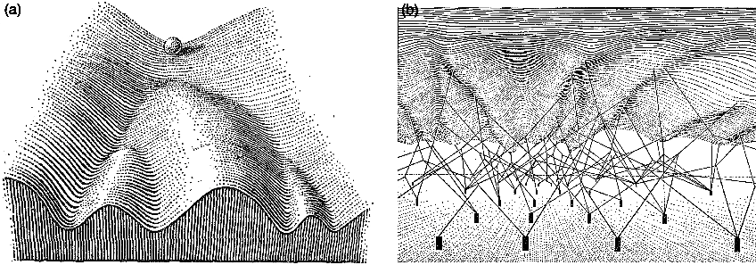
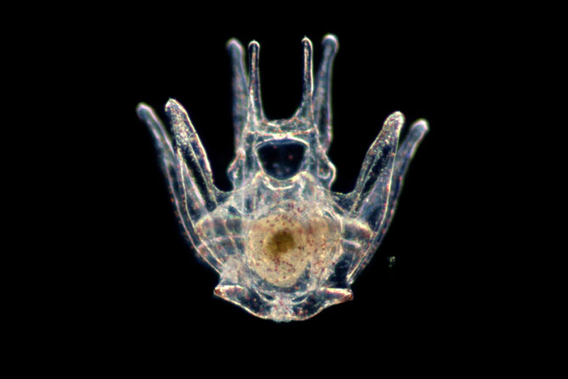

Thinking about constraints and control, not components
There is a paradox at the center of biology. At the molecular level, more or less everything is noisy. Gene expression is stochastic. Protein folding is stochastic. Transcription factors find their binding sites by diffusing around in a soup and getting lucky. When Cheong and colleagues measured how much information the TNF-NF-kB pathway actually transmits from one cell to the next, they got about 0.92 bits per cell per time point (Cheong et al., Science, 2011). That is roughly enough information to tell the cell whether something happened or not, and nothing more. If you look at two genetically identical sister cells a few seconds after division, their protein copy numbers will often differ by factors of two or three (Elowitz et al., Science, 2002). Same DNA, same environment, same everything, and they have already drifted.
And then, despite all of that, every human embryo reliably produces hands with five fingers. Hearts with four chambers. A four-lobed brain. The same program has been running across billions of individuals and deep evolutionary time, and it mostly works. Livers regenerate. Wounds heal. The precision of the outcomes bears almost no relationship to the precision of the molecular processes producing them, and this is so strange that I think we have mostly given up on finding it strange.
The usual way out of this paradox is to wave at genetic determinism. The genome is a blueprint. The cells read the blueprint. This dissolves fairly quickly, because a blueprint specifies outcomes, and the genome very obviously does not specify outcomes. It specifies proteins and the conditions under which they get made. The blueprint metaphor has to be doing some very heavy lifting to turn "here is a list of proteins and their binding partners" into "here is a human with five fingers on each hand." Something else is responsible for the reliability, and for seventy years, across a bunch of mostly disconnected fields, that something else has been slowly assembling itself into a coherent answer.
The answer is that biology achieves reliability by constraining the space of trajectories, not by specifying the states along them. The reliability lives in the landscape, not the path. This is the post where I want to argue that carefully, because I think it reframes a lot of what the field should be measuring and building toward, including what I am personally trying to build.
The landscape is real

A developing zebrafish embryo. Credit: Wagner Lab UCSF.
Waddington drew his epigenetic landscape in 1957. You have probably seen the picture: a ball rolling down a hillside full of branching valleys, each valley ending at a different cell fate. He called the robustness of this process canalization, meaning the tendency of development to reach the same endpoint despite perturbation along the way. What I find more interesting is that he also drew the underside of the landscape, with genes represented as little pegs connected by strings to the surface above, pulling the topology into its particular shape. It was a metaphor without any real mathematics, but the intuition was doing the right kind of work. Regulatory architecture shapes the landscape. The landscape shapes the trajectories. The trajectories determine the outcomes. Everything that followed was essentially an attempt to put numbers on Waddington's cartoon.
The first serious attempt came from Stuart Kauffman in 1969. Kauffman was thinking about gene regulation as a Boolean network, meaning each gene is either on or off and its state at the next time step is some logical function of its neighbors at this time step. If you set up a network like this and let it run, it turns out that it does not wander randomly through the space of possible states. It settles into attractors, meaning small sets of states that it cycles through or sits in indefinitely. Kauffman's claim was that cell types are these attractors (Kauffman, Journal of Theoretical Biology, 1969). You do not need a separate program for a liver cell and a neuron. You need a regulatory network whose dynamics happen to have a liver attractor and a neuron attractor. The cells fall into these attractors the same way a ball falls into a valley, and they stay there for the same reason.
Around the same period, René Thomas was working out something more fundamental about the logic itself. He proved that if you want a network to have multiple stable states, meaning if you want it to be able to sit in more than one attractor, it has to contain at least one positive feedback loop somewhere. And if you want a network to maintain a setpoint or oscillate stably around one, it has to contain at least one negative feedback loop. These are necessity theorems, not descriptions (Thomas, Journal of Theoretical Biology, 1981; Thomas and Kaufman, Chaos, 2001). They do not tell you which particular genes or what kinetics. They tell you that the topology has to be a certain shape for the behavior to even be possible. If you find me a biological switch, I can tell you without looking that there is a positive feedback loop hiding inside it. If you find me a biological thermostat, there is a negative feedback loop. The parts can vary. The architecture cannot.
This matters because it means the control laws of biology are not abstract. They are literally the same class of laws that govern every other engineered feedback system. Barkai and Leibler showed in 1997 that bacterial chemotaxis, meaning the thing that lets E. coli swim up a nutrient gradient, has a property called perfect adaptation. If you dump a bacterium into a new chemical environment, its tumble rate briefly changes and then returns exactly to baseline, regardless of the new concentration. This is not a kinetic coincidence. It is a structural property of the network (Barkai and Leibler, Nature, 1997). A few years later, Yi, Huang, Simon, and Doyle proved that what the bacteria are actually doing is integral feedback control (Yi et al., PNAS, 2000). This is the same mathematical operation that keeps a rocket upright through maximum dynamic pressure, the same thing that keeps your thermostat at 20 degrees, the same thing an airplane autopilot uses to hold altitude through turbulence. The bacteria are doing PID control. They do not know they are doing PID control, and nobody programmed them to do PID control, but the network topology forces them into it because that is what the logic of perfect adaptation requires.
The point I am trying to land here is that when people talk about biological networks being "robust" or "reliable," they usually mean it in a kind of vague, impressionistic way. But there is nothing vague about it. It is the same notion of robustness that control engineers work with every day. Biology has been running feedback loops for three billion years and we are only now writing down the equations for what it has been doing.
The most mathematically complete version of all this came from Jin Wang and his collaborators starting around 2008. Wang's work is the part where I have to slow down, because it took me a long time to really understand what he was saying, and I think it is worth trying to explain it properly rather than in a single sentence. Here is the setup. If you have a physical system in thermal equilibrium, like a gas in a box, you can write down a potential energy function, and the probability of finding the system in any given state is related to that energy by a clean formula called the Boltzmann distribution. Low energy states are likely. High energy states are unlikely. The system sits at the bottom of the potential, and if you perturb it, it relaxes back to the bottom following the gradient of the potential. This is the physics of a ball in a bowl.
Biology is not like this. Biology is not in thermal equilibrium. A living cell is consuming ATP and dumping entropy into its surroundings at all times. It is driven. It is dissipative. Wang's insight was to ask what happens when you try to write down a landscape for a system like this. It turns out you can still define something that looks like a potential, computed from the steady-state probability distribution of the system rather than from energy directly. He called it the quasi-potential, and the formula is U equals negative log of the steady-state probability. Low U corresponds to likely states, which are your attractors. High U corresponds to unlikely states, which are the barriers between attractors. So far this is just a renaming of Waddington's picture in slightly more rigorous language.
The part that is genuinely new is that for a non-equilibrium system, the landscape alone does not determine the dynamics. There is a second force, which Wang calls the rotational curl flux, that drives probability currents around the landscape. In an equilibrium system this flux is zero by construction. In a biological system it is not. What this means concretely is that if you watch many cells navigate a developmental trajectory, they will not just roll down the landscape in the direction of steepest descent. They will spiral. They will take detours. The optimal path from one attractor to another may not pass through the lowest saddle point, because the flux is pushing them sideways as they go. Time-reversal symmetry is broken. The trajectory from stem cell to neuron does not look like the reverse of the trajectory from neuron to stem cell, and the reason is this flux. Wang's group has since validated this framework against actual single-cell transcriptomic data (Wang et al., PNAS, 2024) and shown that the flux is not a small correction. It is often dominant.
Why am I spending so much time on this? Because the flux is the difference between a physics model of biology and a biology model of biology. If you treat development as a gradient flow down a landscape, you get a picture that is almost right and critically wrong. Almost right, because there really is a landscape. Critically wrong, because the dynamics on that landscape are not equilibrium dynamics, and the paths the cells actually take are shaped by something you will not see if you just measure the landscape shape. You have to measure the flow. And you cannot measure flow from snapshots.
Kernels, or why some genes are load-bearing

A sea urchin larva. The organism in which Davidson spent decades mapping the first complete developmental kernel, gene by gene.
The most concrete version of Waddington's landscape in actual biological networks is something Eric Davidson and Douglas Erwin called a kernel (Davidson and Erwin, Science, 2006). A kernel is a small set of regulatory genes that are wired to each other so densely and so recursively that the whole subcircuit behaves as a unit. Each gene in the kernel feeds into the cis-regulatory modules of the others, usually with multiple redundant connections. Davidson spent decades working out the kernel for endomesoderm specification in the sea urchin, mapping every regulatory edge through systematic perturbation. What he found was that the kernel, consisting of a handful of genes (blimp1, otxβ, gatae, foxa, bra), is almost perfectly conserved between sea urchin and sea star across roughly 500 million years of evolution (Hinman and Davidson, PNAS, 2007). Perturb any single gene in this kernel and you do not get a mildly altered embryo. You get no body part at all. The whole specification program collapses.
This always struck me as counterintuitive at first. The whole point of the robustness argument was that biology is buffered against perturbation, but here is this circuit that is apparently so fragile that knocking out any one component destroys it. The resolution is that the kernel itself is fragile, but its output is what is robust. Because every gene in the kernel feeds into every other gene, noise in any one of them gets averaged out by the mutual reinforcement. The state the kernel locks into is determined by the topology of the whole circuit, not by the exact expression level of any single component. This is why the kernel genes are so deeply conserved. You cannot modify them one at a time without breaking the circuit. You cannot gradually evolve them because any intermediate state would fail to specify the body part, and the organism would not develop. The kernel is a kind of evolutionary fossil, frozen by its own load-bearing role.
Equivalent kernel-like circuits almost certainly operate in human development, though we have not mapped any of them at the same resolution as the sea urchin. The most famous candidate is the cardiac kernel, consisting of NKX2-5, GATA4, TBX5, and MEF2C, which is conserved from Drosophila to human and which, when any component is disrupted, produces catastrophic heart defects (Olson, Science, 2006). The hematopoietic specification circuit, GATA2, FLI1, and SCL, shows the same recursive wiring in early blood formation (Pimanda et al., PNAS, 2007). The eye field kernel, which includes PAX6 and SIX3, is so conserved that mammalian PAX6 induces ectopic eyes when you misexpress it in a fruit fly (Halder et al., Science, 1995). These are not just lists of important genes. They are the pieces of machinery that the landscape is actually made of. The reason we have not mapped them at Davidson-in-sea-urchin resolution is mostly that you cannot systematically knock down every transcription factor in a mammalian embryo and watch what happens. The tools do not exist. The inference is strong. The direct measurement is still missing.
There are other places you can see the same architectural principle at work, even at very different scales. In epithelial sheets, there is a feedback system built around YAP and TAZ that maintains homeostatic cell density (Aragona et al., Cell, 2013). When cells get crowded, compressive stress increases, YAP gets excluded from the nucleus, downstream growth genes shut off, division stops, density drops, stress relaxes, YAP returns, and the cycle continues. The setpoint is mechanical stress. The error signal is deviation from it. The actuator is YAP localization. Eisenhoffer and colleagues showed that when you ablate individual cells with a laser, the neighbors sense the tension change within minutes and rush to fill the gap (Eisenhoffer et al., Nature, 2012). It is the same architectural principle as the gap gene network, operating on a different input (mechanical instead of chemical) at a different scale. The logic generalizes. The parts do not.
There is a famous example that is maybe the most crisply quantitative demonstration of any of this, which is the Drosophila gap gene network. Bicoid and Nanos set up opposing morphogen gradients along the front-to-back axis of the embryo. These gradients are noisy. Gregor and colleagues measured that the Bicoid concentration varies by about 10 percent between embryos (Gregor et al., Cell, 2007). And yet the Hunchback expression boundary, meaning the sharp line where one gap gene switches from on to off, varies by less than 1 percent of embryo length across individuals. The network is not reading a threshold and turning a gene on. It is computing something closer to a derivative, integrating concentration and rate of change and neighbor state simultaneously, and producing a boundary sharper than any of its inputs. That is a transfer function. It is a control law. And it is running in a real tissue where you can measure it.
What snapshots cannot tell you
Here is the tension. Everything I just described lives in trajectories. Kernels lock into states over time. Landscapes have shape and flow. Control laws relate what happens now to what happened a moment ago. But the tool the field actually uses to measure cellular state, single-cell RNA sequencing, requires you to kill the cell. You lyse it, you capture its mRNA, you sequence. You get one measurement per cell, and the cell is gone. Whatever trajectory it was on, you cannot watch the rest of it.
The heroic response to this constraint has been an enormous amount of computational ingenuity. Pseudotime orders cells along an inferred trajectory based on how their transcriptomes change. RNA velocity uses the ratio of unspliced to spliced mRNA to guess which direction each cell is moving. Optimal transport fits mass-conserving flows between populations measured at different real time points. These methods extract real signal and they are genuinely useful. But there is a mathematical limit to what they can tell you, and I want to be specific about what it is, because I think most people using these tools do not quite appreciate it.
Weinreb, Wolock, and Klein proved a theorem a few years ago that settles the question (Weinreb et al., PNAS, 2020). For any observed distribution of cell states at a single time point, there are infinitely many dynamical processes that could have produced it. The snapshot underdetermines the trajectory. This is not a limitation of current algorithms or a complaint about sequencing depth. It is a theorem. You cannot know where the cells are going from a picture of where they are. You can infer plausible guesses, and some of them will be right, but you cannot distinguish the correct dynamics from the wrong dynamics using only snapshots. The information is not in the data.
What makes this especially frustrating is that the things you would want to know most, meaning the control laws and the landscape flow and the direction of causation, are exactly the things that are invisible in snapshots. The landscape shape might be recoverable, in some idealized sense, from a very large collection of snapshots across all the states the system passes through. The flow on that landscape, which is what Wang's curl flux describes, cannot be recovered that way, because the flow is defined by the difference between the dynamics going forward and the dynamics going backward, and a snapshot has no direction. You would not know if the cells you are looking at were on their way out of an attractor or settling into it.
And then there is the matter of live-cell biology, which provides an independent reason to doubt that snapshots contain the interesting biology in the first place. Every time anyone has bothered to watch a signaling pathway in real time instead of averaging it at an endpoint, the time-averaged picture has turned out to be a lie. ERK, the famous MAP kinase, does not just turn on in response to growth factor. It pulses, it oscillates, and the frequency of its pulsing encodes meaningfully different cell fate decisions (Albeck et al., Molecular Cell, 2013). NF-kB, which you might think of as a simple on-switch for inflammation, actually oscillates with a roughly 90-minute period that is almost invariant across stimulation intensities (Nelson et al., Science, 2004). Transient versus sustained activation of the same pathway drives opposing fate decisions (Murphy et al., Nature Cell Biology, 2002). The signaling code is written in time. A tool that only reads one frame of the movie reads noise.
The obvious response is to use live imaging. And live imaging is great, but it has its own walls. You can watch one or two labeled proteins in a cell. You cannot simultaneously measure the 20,000-dimensional transcriptome of the same cell while also watching its live signaling dynamics. You can do one or the other. Get the movie or get the molecular snapshot. Get the time-resolved measurement of two markers or get the deep characterization of one time point. There is no version of the technology, currently, where you get both at tissue scale in three dimensions.
The field has started to respond to this with a new class of tools, molecular recorders. Instead of trying to watch the cell live, you engineer the cell to write its own history into its genome or into its proteins, readable later by sequencing or imaging. Systems like GESTALT, CARLIN, DNA Typewriter, and others write indel patterns or insertion sequences that accumulate during cell division or in response to specific signals (McKenna et al., Science, 2016; Bowling et al., Cell, 2020; Choi et al., Nature, 2022). Lineage recording at this kind of resolution is a real advance, and I think it points in the right direction. But the amount of information these recorders can store, even in the best current systems, is small compared to the information content of an actual developmental trajectory. A few thousand bits per cell against a process that runs over weeks and involves dozens of coupled dynamical variables. The gap is still three to five orders of magnitude. And the timescales matter too. Fate decisions take days. Signaling takes minutes. Ion channels gate in microseconds. No single tool covers more than a couple of decades of this range, and nothing integrates across them in the same cells.
Does Perturb-seq fix this? Sort of, not really.
The most sophisticated counterargument to everything I just said is that we now have genome-scale CRISPR perturbation with single-cell readout, known as Perturb-seq, and that Perturb-seq can recover causal structure in ways that pure observation cannot (Dixit et al., Cell, 2016; Replogle et al., Cell, 2022). This is a real point. Interventions are stronger evidence than correlations. If you knock out a gene and something downstream changes, you have better grounds for calling the first thing a cause than if you just observed them co-varying. In principle, a large enough Perturb-seq screen could map out causal relationships across the whole regulatory network.
In practice, there is a problem, and it is the same problem. Standard Perturb-seq reads out a single endpoint snapshot after the perturbation has had time to propagate through the network. So the thing you measure is not the direct effect of the perturbation. It is the sum of direct effects, indirect effects, and feedback loops that have all equilibrated by the time you sequenced. If you knock out a transcription factor, it changes the expression of its direct targets, which changes the expression of their targets, and so on, and the endpoint is a cascade that has worked itself out. From that endpoint you cannot easily tell which changes are direct and which are indirect. Multiple different causal graphs can produce the same endpoint distribution, which is just the same identifiability problem we had with observational data, in slightly different clothes.
The people working on this know it. A recent review of the field concluded, not without some despair, that there is currently no accepted method for inferring gene regulatory networks from perturbation response data. The experiments are running. The machines are making the data. The data underdetermines what we want to know. The solution that is starting to emerge is to pair perturbation with metabolic labeling, which lets you measure the newly transcribed RNA after the perturbation, giving you a short-horizon dynamic response rather than an endpoint. Methods like PerturbSci-Kinetics (Xu et al., Nature Biotechnology, 2024) and sci-FATE2 (Cao et al., 2020) are starting to do this. They show what the fix actually looks like: you add time back into the measurement. Once you have temporal resolution to go with the intervention, the causal inference gets much better. In the Scribe framework, which explicitly compares causal recovery with and without temporal coupling, the difference is the difference between almost-random and pretty-good (Qiu et al., Cell Systems, 2020). Intervention without dynamics does not close the gap. Intervention with dynamics starts to.
None of this makes Perturb-seq useless. It is extremely useful for generating hypotheses and for mapping perturbation response signatures at scale. But it is not the causal GRN that people sometimes claim it is. For the control law question specifically, the kind of question I actually care about, where I want to know which genes are enforcing setpoints and returning the system to equilibrium when pushed, you need the time course. Not just the response.
So what is the actual argument
Here is what I think is going on, stated as carefully as I can.
The field has operated, mostly without saying so out loud, on the assumption that if we collect enough molecular snapshots, dynamics will eventually emerge. More genes, more cells, more timepoints, more tissue atlases, more perturbation screens. Accumulate enough static data and the moving picture will reveal itself.
I think this is wrong, and specifically wrong in a way that affects what we should be building. The dynamics are not hidden inside the snapshots, waiting to be extracted by a sufficiently clever algorithm. The dynamics are in the things that connect snapshots, meaning the flow on the landscape, the rates of transition, the noise structure at bifurcation points, the temporal order of events in individual cells. These are not statistical artifacts of static data. They are the actual object of interest, and they are not recoverable from the static data no matter how much of it you collect. Piling up more snapshots of dead cells gives you a very high-resolution picture of where cells tend to be, which is useful, but it does not give you the rules that govern where cells go.
This has an uncomfortable corollary for the current generation of single-cell foundation models, the scGPTs and Geneformers and scFoundations of the world. These models are trained on tens of millions of static transcriptomes. The training objective is masked gene prediction, which is a co-expression task, not a temporal task. There is no notion of before and after anywhere in the training. When you use one of these models to "predict trajectories," the temporal direction comes from an external tool (pseudotime, velocity) that the foundation model had nothing to do with. The model contributes a learned embedding, not temporal understanding. This is not a failure of architecture. It is a consequence of the data. You cannot learn causal dynamics from data that contains no causal dynamics, and scaling up the amount of data does not fix this. Static data makes static models.
What the field actually needs is a new kind of measurement, and it has a specific shape. You need to be able to track the same individual cells over time, record the dynamic events that constitute their histories, integrate across the relevant timescales from signaling to fate commitment, and register all of it to molecular identity at the end. The tools that do pieces of this already exist. Biosensors can read signaling at the second-to-minute scale. Metabolic labeling catches transcription rates at the minute-to-hour scale. Molecular recorders write lineage and signal histories at the day-to-week scale. Spatial transcriptomics registers everything to position. The pieces exist. The integrated architecture, where you can do all of these in the same tissue at the same time in a way that lets you reconstruct actual trajectories, does not exist yet. Building it is the work.
If we had it, here is what it would give us. The Waddington landscape as an empirical object, measurable rather than assumed. Bifurcation points identifiable from real divergence of real individual cells, not inferred from clustering boundaries. Noise structure quantifiable at each decision point, with intrinsic stochasticity distinguishable from extrinsic variation and from functionally exploited noise. Perturbation effects interpretable as landscape reshaping, where you can ask whether a drug flattens a barrier or eliminates an attractor or creates a new basin, rather than just observing that it shifts the average state. And causal structure visible from the temporal order of events in individual cells, which no static measurement can ever provide, no matter how high-dimensional.
Why this matters for organ engineering
I wrote a previous post on the actual state of organ bioengineering, and the short version is that the wins have all been for avascular tissues with simple architecture and the failures have been for anything requiring self-organization at scale. Vascularization is hard. Cell maturation is hard. Innervation is hard. But there is a sixth bottleneck that almost nobody names, which is that we cannot monitor or guide self-organization while it is happening.
Organoids prove that cells know how to self-organize. A single intestinal stem cell in the right matrix will rebuild the crypt-villus architecture of the gut (Sato et al., Nature, 2009). The capacity is encoded in the regulatory network. What fails in organoid engineering is not capacity. It is reliability. Batch-to-batch variation is enormous. Maturation stalls at fetal stages. Patterning is incomplete. The problems are always traceable to early stochastic events that propagated into divergent outcomes, and by the time you can see the problem, the critical decision has already been made many days ago.
The constraint framework says something specific about this. Early developmental decisions are bifurcation points. They are moments when a trajectory crosses a basin boundary and commits to one attractor rather than another. The noise at those points determines how stochastic the commitment is, and the boundary conditions, meaning growth factors, mechanical context, neighbor signaling, determine where the basin boundary sits. If you could watch an organoid during its first few hours and see the signaling dynamics and the transcriptional state of each cell, you would see the bifurcation events happening. You would see which cells were drifting toward the wrong attractor. You could intervene before the deviation propagated, adjusting the boundary conditions to keep the system in the right basin.
This is feedback control of self-organization. Not specifying every outcome, which is impossible, but holding the boundary conditions such that the landscape does the work for you. The landscape already does this in vivo. The embryo runs a robust developmental program because the kernel topology enforces the outcome regardless of small perturbations. In vitro, we have the same cells but without the full in vivo context, and the landscape is shallower. The basins of attraction are less deep. The drift is larger. What we need to add is an external control layer, which means we need to be able to measure what the cells are doing and intervene based on what we see.
Khammash's group at ETH has done the canonical demonstrations of what this actually looks like in practice. They have built optogenetic feedback systems that maintain defined setpoints in gene expression against perturbation, implementing integral feedback in living cells using light as the actuator (Rullan et al., Molecular Cell, 2018; Lugagne et al., Nature Communications, 2017). The control theory works. The actuation works. What is missing is the observer, meaning the measurement system that tells you what state the cells are actually in so that the controller knows how to respond. Ben-Zvi and Barkai have shown that developing embryos already do this natively, using morphogen scaling to maintain gradient shape despite embryo-to-embryo size variation (Ben-Zvi and Barkai, PNAS, 2010). The biology has been running closed-loop control this whole time. We just have not been able to see what it is controlling.
I want to build the observer. I think of this as the missing layer in tissue engineering, the thing that turns the current open-loop process, which is "mix the right cells with the right matrix and hope," into a closed-loop process where the system sees when things are going wrong and corrects them. This is the kind of engineering biology should have been doing all along, and the reason we have not been doing it is that we did not have the measurement layer. I want the measurement layer. I want cells to record their own developmental histories into a stable molecular substrate that I can read at the end of the experiment. Once I have that, the rest is, if not easy, at least a well-defined engineering problem.
The closing point
Seventy years of theory have been telling biology the same thing, which is that it is a dynamical system defined by constraints on trajectories rather than by enumeration of states. Waddington drew the picture in 1957. Kauffman put numbers on it in 1969. Thomas proved the necessity theorems in 1981. Wang worked out the non-equilibrium mathematics starting in 2008. And throughout all of this, the measurement technology has not quite been there. Close sometimes, but never quite there. The single-cell revolution of the last fifteen years brought us to an extraordinary resolution on molecular state at a single instant, and then stopped, because that is what the technology does. It tells you what is in the cell. It does not tell you where the cell is going.
I do not think the ceiling is permanent. Recorders are gaining orders of magnitude in information capacity every few years. Protein assembly systems can now record weeks of transcription factor dynamics in living neurons (Linghu et al., Cell, 2023). Non-destructive readouts are starting to look feasible. Spatial multi-omics is becoming routine. The computational frameworks for reasoning about landscapes and trajectories, scDiffEq and Schrödinger bridges and path-integral methods, are sitting there waiting for someone to feed them the right kind of data. What is left to build is the integrated measurement architecture that layers these tools together, applies them to a developing tissue, and produces the trajectory data that everything else has been predicated on.
The cells already know how to build organs. Every embryo proves this. The question for organ engineering is whether we can learn enough about the constraints the cells are navigating to keep them on the right trajectory when we ask them to do it outside the body. That is a measurement problem before it is an engineering problem, and the measurement problem has a specific shape. You do not just need the final state. You need the integrated history. What signals the cell accumulated, what forces it felt, what its neighbors were doing, what basins it passed near and what basins it landed in, all readable alongside its final molecular identity. If you only have the endpoint, you know where the cell ended up. If you have the history, you know the rule it followed to get there. The rule is the thing that generalizes. The rule is what you would need to enforce the same outcome on a different substrate, in a different context, at a different scale. The rule is the actual object of interest, and the whole argument of this post, stated as simply as I can state it, is that we have been trying to measure biology without being able to see the rules.